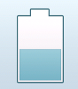

TouchGFX is framework, written in C++, that allows you to create modern, graphical user interfaces on limited-resource embedded systems and allows smartphone-like look and feel on hardware platforms an order of magnitude less powerful than smartphones, e.g. ARM Cortex M3/M4 48-204 MHz.
This repository, the TouchGFX Open Repository, contains numerous examples of, and ideas for, graphical components such as widgets, containers and mixins that are not part of the core framework. They can be used as a source of inspiration for your applications free of charge; The components are all generalized to some extend but probably needs some sort of fine tuning to match your specific needs. PLease not that none of the components are guaranteed to be maintained across new versions of TouchGFX.
This repository would greatly benefit from TouchGFX developers around the world sharing some of their work. Having a solid community that shares complex ideas for TouchGFX widgets is something that can help reduce development time greatly. If you would like to contribute to this repository you can fork and follow the guide below. When done, open a pull request to your branch. Each contribution should conform to the following standards:
On the TouchGFX website you can request a full evaluation version of the framework as well as order commercial licenses. Read more about the concept of widgets, containers and mixins in in the TouchGFX documentation.
| LinearGauge (TouchGFX 4.1.1)  |
ExtendedZoomAnimationImage (TouchGFX 4.1.1) | Carousel (TouchGFX 4.1.1)  |
| Eve | Jackson | 94 |
| | | |
|:----------|:-------------|:------|
| LinearGauge (TouchGFX 4.1.1)
| ExtendedZoomAnimationImage (TouchGFX 4.1.1) | Carousel (TouchGFX 4.1.1) |
| DotIndicator (TouchGFX 4.1.1) | SwipeContainer* (TouchGFX 4.1.1) | Gauge (TouchGFX 4.2) |
| WheelSelector (TouchGFX 4.2) | CircularProgress (TouchGFX 4.2)| |

All widgets, containers and mixins found in this repository are free software for both commercial and non-commericial use. You may use, copy, redistribute and modify the files as needed. This program is distributed in the hope that it will be useful, but WITHOUT ANY WARRANTY.
The TouchGFX framework is a Draupner Graphics product.